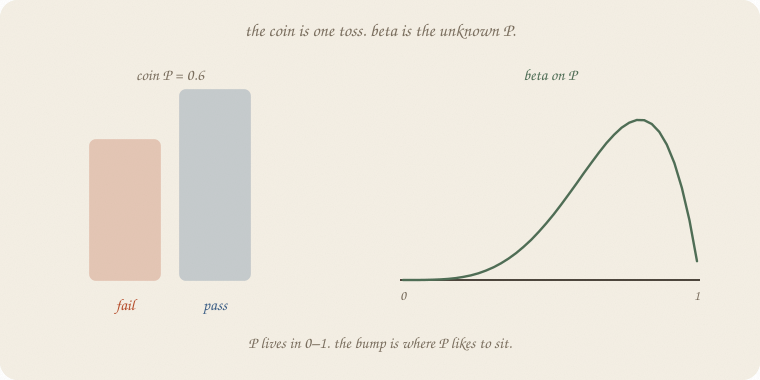
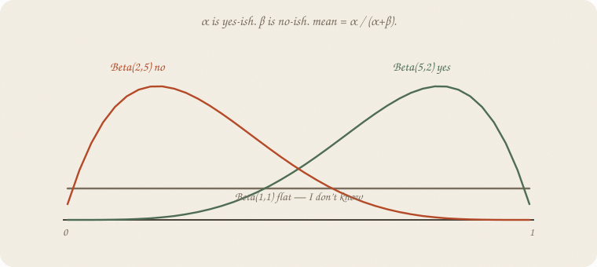
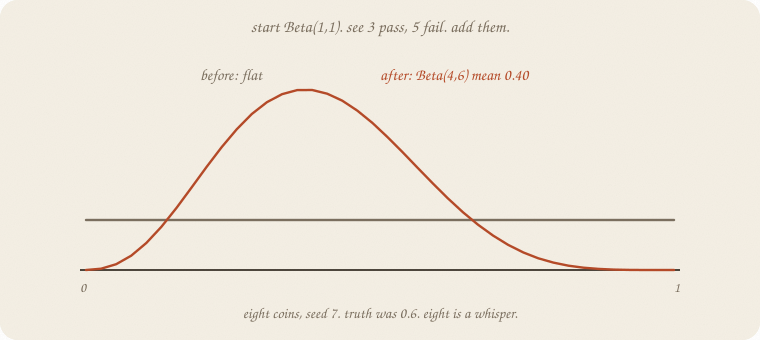
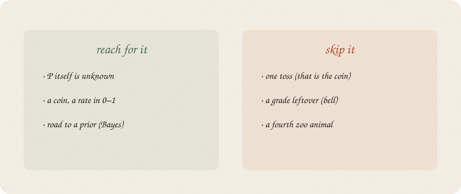

datazines · a sketchbook

Read 01 distributions first. Bell, coin, counts. This is the coin’s cousin, not a fourth zoo animal. Logistic already used a coin for one pass/fail. Beta is what you wear when P(pass) is the thing you don’t know yet.
Flip it like a notebook. One page = one idea. Done.
A Bernoulli coin: each person passes with probability P, or they don’t.
Logistic estimated P from hours. Fine.
Sometimes you do not have hours. You have a rate you have not seen: next year’s pass rate, a coin you have not flipped, a click rate.
Then P itself is the unknown. It lives in 0–1. A bell can spill below 0. A count costume is for 0, 1, 2, …. Wrong family.
Beta is a bump on that stick. Where the bump sits is your guess about P. How fat the bump is: how sure.
People write Beta(α, β). Ugly. Friendly:
Beta(1, 1) is flat: I don’t know. It is not “I already saw one pass and one fail.” After you see tosses, you add them. Then the knobs start to look like counts.
Mean = α / (α + β). Always in 0–1. Legal region, built in.

| costume | mean | vibe |
|---|---|---|
| Beta(1, 1) | 0.50 | flat — I don’t know |
| Beta(2, 2) | 0.50 | mild bump in the middle |
| Beta(5, 2) | 0.71 | leans yes |
| Beta(2, 5) | 0.29 | leans no |
α = 1, β = 1 is the honest shrug. Bigger α + β: same mean, skinnier bump. You are more sure.
Not a 40-curve catalog. These four are the interview.
Start Beta(1, 1). Flat.
See 3 pass, 5 fail (eight coins).
Add them: α ← 1 + 3, β ← 1 + 5. Now Beta(4, 6). Mean 0.40.

The bump slid toward fail. Eight tosses are a whisper. The truth in the machine was 0.6 — we drew a gloomy sample. That is the point: a small pile can look like the wrong coin. The bump is still wide (5% at 0.17, 95% at 0.66). Not a verdict.
Start Beta(2, 2) instead (mild “about half”). Same eight: Beta(5, 7), mean 0.42. The start still tugs. More tosses, the start matters less.
People call this conjugate: beta in, coin data, beta out. Fancy. Job: add the yeses to α, the nos to β.
01 prior names this move.
If you keep only one thing:
coin = one toss. beta = the unknown P. add the yeses.
True P = 0.6. Eight tosses. Flat start, then the add. No sklearn estimator — the bump is the lesson.
import numpy as np
from scipy.stats import beta
rng = np.random.default_rng(7)
tosses = rng.binomial(1, 0.6, 8)
yes, no = int(tosses.sum()), int(8 - tosses.sum())
print("tosses", tosses.tolist(), " yes", yes, " no", no)
def show(a, b, title):
d = beta(a, b)
print(title)
print(f" mean {d.mean():.3f} 5% {d.ppf(0.05):.3f} 95% {d.ppf(0.95):.3f}")
show(1, 1, "start Beta(1,1)")
show(1 + yes, 1 + no, "after Beta(1+yes, 1+no)")
show(2, 2, "start Beta(2,2)")
show(2 + yes, 2 + no, "after Beta(2+yes, 2+no)")
tosses [0, 0, 0, 1, 1, 0, 1, 0] yes 3 no 5
start Beta(1,1)
mean 0.500 5% 0.050 95% 0.950
after Beta(1+yes, 1+no)
mean 0.400 5% 0.169 95% 0.655
start Beta(2,2)
mean 0.500 5% 0.135 95% 0.865
after Beta(2+yes, 2+no)
mean 0.417 5% 0.200 95% 0.650
Three yes, five no. Flat start → mean 0.40, still a wide stick (0.16 to 0.66). Mild start Beta(2, 2) → 0.42. Truth was 0.6; eight coins lied a little. ppf(0.05) / ppf(0.95) are the bump’s shoulders, not a t-test.
| word | meaning |
|---|---|
| coin / Bernoulli | one toss, P known or estimated |
| beta | bump on 0–1 for unknown P |
| α, β | yes-ish, no-ish mass |
| mean | α / (α + β) |
| Beta(1, 1) | flat — I don’t know |
| add | yeses → α, nos → β |
Also called (in a room):
| here | there |
|---|---|
| α, β | pseudo-counts |
| Beta(1,1) | uniform on 0–1 |
| add | conjugate update |

Reach for it when
Skip it when
Pays you: a legal bump for a rate. A start you can write in two numbers. The move Bayes will name.
Costs you: eight tosses are a whisper. α, β are not “data” until you say they are a guess. Not a sampler. Not a fourth zoo.
Chance 02. Coin’s cousin. Next: 01 prior — this bump, named.
Flip it like a notebook. One page = one idea.